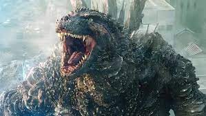

ยุคเรวะ (Reiwa Era: 2016-ปัจจุบัน)
เริ่มต้น : ปี 2016 กับ Shin Godzilla โดย Hideaki Anno ซึ่งเป็นการตีความใหม่ของ Godzilla ที่ได้รับความนิยมอย่างมาก โดยนำเสนอ Godzilla เป็นสิ่งมีชีวิตที่กลายพันธุ์และพัฒนาตัวเองได้อย่างต่อเนื่อง
ธีมหลัก : ยุคนี้มักจะมีการผสมผสานระหว่างวิทยาศาสตร์ เทคโนโลยี และการเมืองเข้าด้วยกัน เช่น Shin Godzilla นำเสนอการตอบสนองของรัฐบาลต่อภัยพิบัติ Godzilla ในยุคนี้ถูกมองว่าเป็นการเปรียบเทียบกับภัยพิบัติในโลกความจริง เช่น เหตุการณ์สึนามิและอุบัติเหตุนิวเคลียร์ฟุกุชิมะ
โทนเรื่องราว : นอกจาก Shin Godzilla ยังมีอนิเมชันไตรภาคของ Netflix และการร่วมมือกับฮอลลีวูดในภาพยนตร์ MonsterVerse อย่าง Godzilla: King of the Monsters (2019) และ Godzilla vs. Kong (2021)
- ปัจจุบัน: Godzilla Minus One (2023) เป็นผลงานล่าสุดในยุคเรวะ โดยมีโทนจริงจังและเข้มข้น
